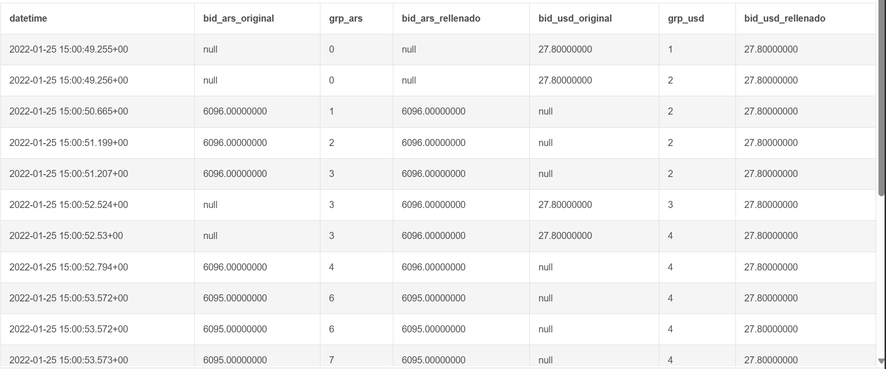
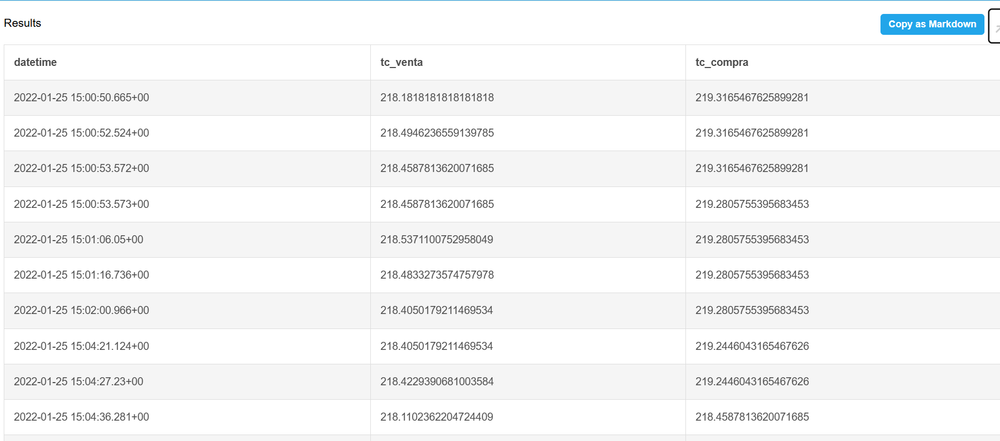

SQL — Dólar MEP
Contexto del problema
El dólar MEP es una operación de compra o venta de dólares a través de instrumentos financieros. El tipo de cambio implícito surge del cociente entre los precios de compra/venta en cada moneda:
TC Venta (lo que pago por 1 USD) = bid_ars ÷ ask_usd
TC Compra (lo que recibo por 1 USD) = ask_ars ÷ bid_usd
Mi razonamiento
1. Exploración de los datos
Lo primero que hice fue explorar la tabla para entender qué estaba mirando. Noté dos cosas clave: la tabla tiene registros de precio del mismo bono en dos monedas (ARS y USD), pero las actualizaciones no ocurren al mismo tiempo. Hay momentos donde se actualiza solo el precio en pesos y momentos donde se actualiza solo el de dólares. Además, hay muchas filas consecutivas con los mismos valores (actualizaciones repetidas sin cambio real de precio).
2. Primer enfoque descartado: cuartetos
Mi primer instinto fue agrupar los 4 valores que necesito (bid ARS, ask ARS, bid USD, ask USD) por datetime, guardarlos como un bloque y compararlos con el siguiente. Pero esto no funciona porque los datetime de ARS y USD casi nunca coinciden, así que no puedo hacer un JOIN directo por timestamp.
3. Pivotear la tabla
Cambié de estrategia y decidí pivotear la tabla: en vez de tener filas separadas por moneda, armo columnas separadas (bid_ars, ask_ars, bid_usd, ask_usd). Cuando una fila es de ARS, las columnas de USD quedan vacías (NULL), y viceversa. De esta forma puedo leer todo horizontalmente y no tener que ir buscando y matcheando entre filas de distintas monedas.
4. Rellenar NULLs — "arrastrar de arriba"
El pivoteo me deja con NULLs en todos lados. La solución es arrastrar el último valor conocido: si a las 15:00:49 el bid USD era 27.80 y a las 15:00:50 no hay actualización de USD, asumo que sigue valiendo 27.80.
Para implementar esto usé una técnica en dos pasos. Primero creo un contador por cada columna que solo se incrementa cuando aparece un valor nuevo (no-NULL). Esto genera "grupos": cada grupo tiene un único valor real y cero o más NULLs debajo. Después, dentro de cada grupo, uso MAX() para obtener ese valor real. MAX ignora NULLs, y como cada grupo tiene un solo valor, me lo devuelve directamente. Elegí MAX en vez de FIRST_VALUE porque MAX sin ORDER BY es más performante: el motor no necesita ordenar dentro de cada partición.

5. Filtrar filas sin cambio real
Después de rellenar, muchas filas consecutivas quedan con los mismos 4 valores. Calcular el tipo de cambio en esas filas es innecesario. Entonces uso LAG sobre los 4 valores para comparar cada fila con la inmediata de arriba. Si los 4 son iguales, descarto la fila. Solo me quedo con las filas donde al menos uno cambió. Esto responde directamente a la pista del enunciado: "un cambio de precio ocurre cuando cambia alguno de los precios".
6. Calcular tipo de cambio
Solo en las filas que sobreviven el filtro, calculo: TC Venta = bid_ars ÷ ask_usd y TC Compra = ask_ars ÷ bid_usd. Esto minimiza la cantidad de divisiones que ejecuta el motor.

Query final
-- PASO 1: Pivotear la tabla -- Separo ARS y USD en columnas distintas. Donde no hay dato, queda NULL. WITH pivotada AS ( SELECT datetime, CASE WHEN moneda = 'ARS' THEN bid END AS bid_ars, CASE WHEN moneda = 'ARS' THEN ask END AS ask_ars, CASE WHEN moneda = 'USD' THEN bid END AS bid_usd, CASE WHEN moneda = 'USD' THEN ask END AS ask_usd FROM precios ), -- PASO 2: Crear grupos para cada columna -- COUNT cuenta solo no-NULLs. Cada valor nuevo = nuevo grupo. con_grupos AS ( SELECT datetime, bid_ars, ask_ars, bid_usd, ask_usd, COUNT(bid_ars) OVER (ORDER BY datetime) AS grp_bid_ars, COUNT(ask_ars) OVER (ORDER BY datetime) AS grp_ask_ars, COUNT(bid_usd) OVER (ORDER BY datetime) AS grp_bid_usd, COUNT(ask_usd) OVER (ORDER BY datetime) AS grp_ask_usd FROM pivotada ), -- PASO 3: Rellenar NULLs -- Cada grupo tiene un solo valor real. MAX lo encuentra (ignora NULLs). rellenada AS ( SELECT datetime, MAX(bid_ars) OVER (PARTITION BY grp_bid_ars) AS bid_ars, MAX(ask_ars) OVER (PARTITION BY grp_ask_ars) AS ask_ars, MAX(bid_usd) OVER (PARTITION BY grp_bid_usd) AS bid_usd, MAX(ask_usd) OVER (PARTITION BY grp_ask_usd) AS ask_usd FROM con_grupos ), -- PASO 4: Detectar cambios -- Comparo cada fila con la anterior. Solo me quedo con las que cambiaron. con_cambios AS ( SELECT datetime, bid_ars, ask_ars, bid_usd, ask_usd, LAG(bid_ars) OVER (ORDER BY datetime) AS prev_bid_ars, LAG(ask_ars) OVER (ORDER BY datetime) AS prev_ask_ars, LAG(bid_usd) OVER (ORDER BY datetime) AS prev_bid_usd, LAG(ask_usd) OVER (ORDER BY datetime) AS prev_ask_usd FROM rellenada ) -- PASO 5: Resultado final -- Filtro filas sin cambio y calculo el TC. SELECT datetime, bid_ars / ask_usd AS tc_venta, ask_ars / bid_usd AS tc_compra FROM con_cambios WHERE bid_ars IS NOT NULL AND ask_usd IS NOT NULL AND ( bid_ars IS DISTINCT FROM prev_bid_ars OR ask_ars IS DISTINCT FROM prev_ask_ars OR bid_usd IS DISTINCT FROM prev_bid_usd OR ask_usd IS DISTINCT FROM prev_ask_usd ) ORDER BY datetime;
Visualización — Dashboard Power BI
Insights del análisis
Tendencia
El TC bajó -1,31 ARS/USD (-0,6%) durante la sesión. Desde compliance, si un cliente compra volumen alto al inicio (caro) y vende al cierre (barato), pierde plata a propósito. Eso puede ser señal de lavado: le importa mover fondos, no la ganancia.
Spread
El pico máximo fue 2,86 (4,2x el promedio de 0,68), alrededor de las 16:20. Un spread alto indica que hay poca gente operando o que el precio se está moviendo mucho. Si un cliente opera consistentemente en esos picos, puede indicar que no le importa el costo (lavado) o que se anticipó al movimiento con información privilegiada.
Frecuencia
956 cambios en ~4 horas = un dato nuevo cada ~15 segundos. Esta granularidad permite detectar patrones que a menor frecuencia serían invisibles: operaciones concentradas en el mismo segundo, compras y ventas en intervalos sospechosamente regulares, o movimientos coordinados entre múltiples clientes.